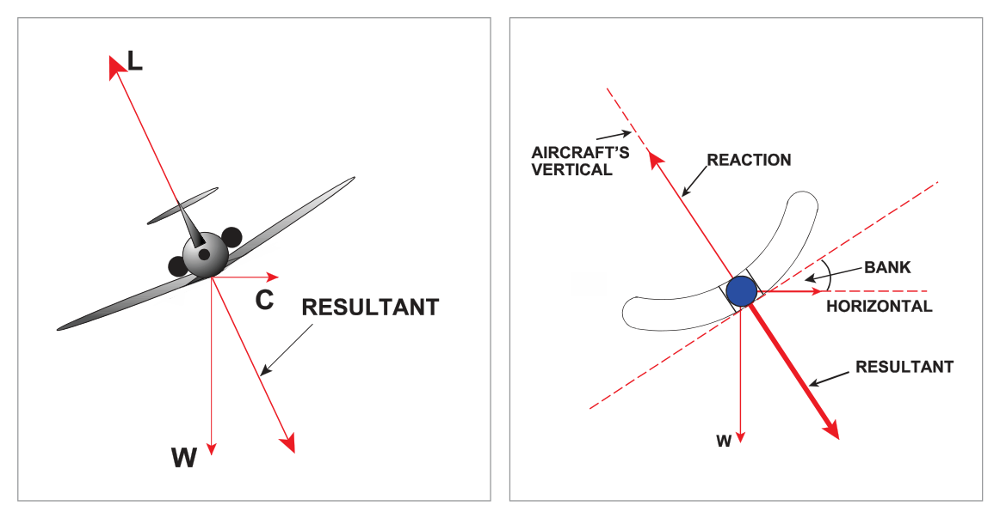
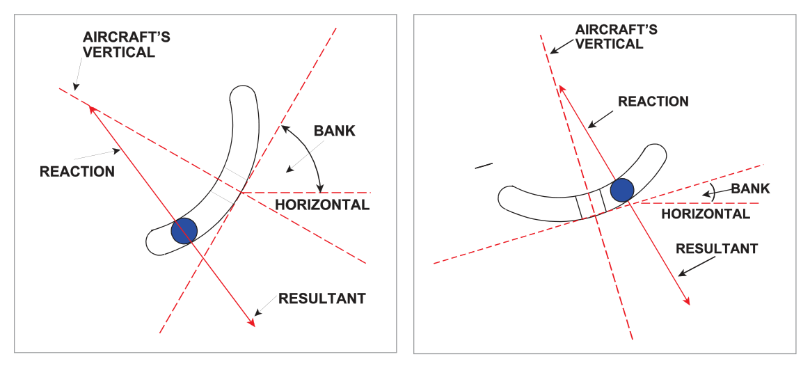
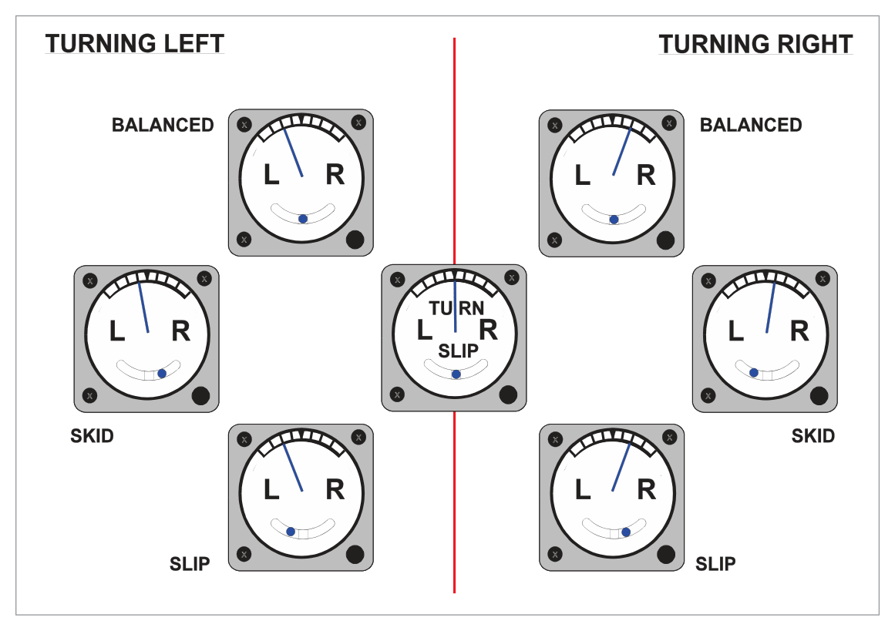

What this section covers: What the Turn and Slip Indicator (TBI) comprises and what each part measures.
The Turn and Slip Indicator (also called Turn and Bank Indicator or TBI) incorporates two measuring devices, both indicating on the same instrument face:
Rate of Turn Indicator — uses a rate gyro to measure rate of turn about the vertical axis.
Slip Indicator — a simple pendulous device (ball in a curved tube) showing whether the turn is balanced (correct bank for TAS and rate of turn), or indicating slip or skid.
2. The Rate Gyro — Principle
What this section covers: The horizontal-axis rate gyro; one gimbal; one degree of freedom; why a low rotor speed is desirable.
The turn indicator is based on a horizontal-axis rate gyro with only one gimbal and therefore only one degree of freedom.
If the aircraft banks (without turning) — the gyro axis has the freedom to remain horizontal (no effect).
If the aircraft yaws (turns) — the frame (fixed to the airframe) applies a force (primary torque) about the ZZ axis, where the gyro has no freedom. This causes a primary precession about the YY axis, tilting the gyro.
A spring system prevents the gyro from turning all the way to the vertical. The amount of spring stretch is a measure of the rate of turn.
Why LOW rotor speed is used: The gyroscopic property of precession (not rigidity) is used to measure the rate of turn. A high gyroscopic rigidity would be undesirable because it would require a very large torque to produce the measurable precession needed.
3. Operation — Spring and Precession Equilibrium
What this section covers: The chain of events from turn entry to equilibrium; how the scale is calibrated.
When the aircraft turns:
Primary torque acts about the ZZ axis (the aircraft yaws).
Primary precession occurs about the YY axis → the gimbal tilts.
As the rotor tilts, the spring between gimbal and frame extends.
Spring tension applies a secondary torque about the YY axis.
This secondary torque, with precession, continues until gimbal tilt gives spring tension producing a rate of secondary precession equal to the rate of turn → equilibrium.
The chain of events is virtually instantaneous — as the aircraft goes into a turn, the gimbal immediately takes up the appropriate angle of tilt. If the rate of turn changes, the tilt changes to re-establish the balance. The angle of tilt is thus a measure of the rate of turn.
Scale Calibration:
First graduation = Rate 1 turn = 3°/second (360° in 2 minutes).
Second graduation = Rate 2 = 6°/second.
Higher rates are possible depending on instrument.
4. Constructional Details and Calibration
What this section covers: Suction and electric versions; damping; stops; calibration TAS; TAS error limits.
Suction and electrically-driven types are available. For suction types, an engine-driven pump or venturi applies suction; replacement air enters via a filter and is directed as a jet at buckets on the rotor periphery.
Rotor rpm are low compared with the DGI and AH (because precession is used, not rigidity).
A damping system (piston-in-cylinder or electromagnetic device) reduces oscillation of the gimbal.
Stops limit gimbal movement to a tilt corresponding to a turn of about 20°/second. Because there is only one gimbal, the gyro will not topple when it comes against the stops.
TAS Calibration and Error
Calibration of correct rate of turn (spring tension) is optimized for a design TAS. However, only a small error is introduced even for quite large departures from design TAS. One manufacturer quotes:
Specification
Value
Maximum TAS error over operating range
5%
TAS range quoted
85 to 350 knots
Design calibration TAS
260 knots
5. Effect of Varying Rotor Speed
What this section covers: What happens when suction is inadequate (underspeeding) or excessive (overspeeding).
HAZARD — Underspeeding: If the gyro is underspeeding, the same gimbal tilt requires less spring tension, meaning the aircraft may be turning faster than indicated. Pilot may under-bank and exceed the intended track.
6. Errors in the Looping Plane
What this section covers: How steep turns cause additional errors via movement in the looping plane.
In a gently banked turn, the aircraft turns mainly in the yawing plane. In a steep turn there is more movement in the looping plane. Normally this means rotation about the rotor axis with no effect. However, if the gimbal is already tilted (from a preceding yaw), movement in the looping plane causes additional precession of the rotor.
In a steep turn, the usual positive movement in the looping plane will increase the gimbal tilt — causing the indicator to over-read, sometimes coming against the stops.
7. The Slip Indicator
What this section covers: Purpose, construction, and bank angle rule of thumb.
The slip indicator indicates whether a turn is properly balanced (correct bank angle for TAS and rate of turn), or whether the aircraft is slipping in or skidding out.
Rule of Thumb for Rate 1 Bank Angle
Required Bank Angle ≈ (TAS ÷ 10) + 7 degrees
Valid for Rate 1 turns with TAS between 100 and 250 knots.
Example: TAS 150 kt → Bank = 15 + 7 = 22°
Construction
The modern slip indicator is a 'ball-in-tube inclinometer' — a solid ball in a curved tube containing liquid that damps out oscillations. Early types used a simple metal pendulum with piston-in-cylinder damping. The heavy ball behaves like a pendulum, with the centre of curvature of the tube acting as the effective suspension point.
What this section covers: The physics of the ball in level flight, balanced turns, and unbalanced turns.
Level Flight
Weight W of the ball acts downwards; equal and opposite reaction from the base of the tube acts upwards towards the centre of curvature. Wings level → ball lies between the two etched lines.
Balanced Turn
In a balanced turn, the ball rolls outward due to centrifugal force, taking up a new equilibrium where the reaction of the tube base balances the resultant of ball weight and centrifugal force. Because both aircraft and ball experience the same TAS and rate of turn (same centripetal acceleration), their resultant force vectors are parallel. When the ball is central, the turn is balanced — lift equals the resultant of weight and centrifugal force.

Figs 14.5 & 14.6 — Balanced turn to port: ball remains central (centrifugal force balances out). Source p.189
Unbalanced Turns

Fig 14.7 — Unbalanced turn to port (slipping in): too much bank; ball moves toward the inside (left of centre). Source p.190

Fig 14.8 — Unbalanced turn to port (skidding out): insufficient bank; ball moves toward the outside (right of centre). Source p.190
Interpreting the Ball:
Ball Position
Turn State
Correction
Central (between lines)
Balanced turn
None needed
Inside the turn (e.g. left in left turn)
Slipping in (too much bank; radius too small)
Reduce bank
Outside the turn (e.g. right in left turn)
Skidding out (insufficient bank; radius too large)
Increase bank or increase rudder
Memory aid: "Step on the ball" — apply rudder in the direction the ball has moved to correct the slip/skid.
9. Turn and Slip Displays
What this section covers: Reading needle-and-ball displays.
The turn indicator needle deflects in the direction of turn (left or right of centre). Rate 1 is indicated at the first marked graduation on each side. The ball shows balanced or unbalanced state as described above.
flowchart LR
subgraph T[Turn Indicator - Needle]
NL["Needle Left\n= Left Turn"]
NC["Needle Centre\n= Straight Ahead"]
NR["Needle Right\n= Right Turn"]
end
subgraph S[Slip Indicator - Ball]
BL["Ball Left\n= Slipping In\n(left turn - too much bank)"]
BC["Ball Centre\n= Balanced"]
BR["Ball Right\n= Skidding Out\n(left turn - too little bank)"]
end
10. Rate 1 Turn Calculations
What this section covers: Calculating turn diameter, radius, and circumference for Rate 1 turns.
Rate 1 = 3°/second = 360° in 2 minutes
Worked Example — Turn Diameter at Rate 1, TAS 360 kt
Given: TAS = 360 kt, Rate 1 turn.
Step 1: Rate 1 = 2 minutes for 360°. At 360 kt, distance in 2 min = 360 × (2/60) = 12 NM. This is the circumference of the turn circle.
Step 2: Circumference = π × d → 12 = (22/7) × d → d = 12 × 7/22 = 3.8 NM
Quick check rule: TAS ÷ 100 ≈ diameter in NM (rough). 360 ÷ 100 = 3.6 NM ✓ (close to 3.8).
Q1.The rate of turn indicator uses (i) ............... which spins (ii)...................
(i) a space gyroscope — (ii) up and away from the pilot
(i) a tied gyro — (ii) anticlockwise when viewed from above
(i) a rate gyro — (ii) up and away from the pilot
(i) an earth gyro — (ii) clockwise
Correct Answer: (c) a rate gyro — up and away from the pilot
Explanation: The turn indicator uses a rate gyro (one gimbal, spring restrained, measuring precession caused by yaw rate). The rotor spins "up and away from the pilot" in British instruments (anticlockwise when viewed from the front — but the question refers to the direction of spin visible from the pilot's view, which is up and away). See Section 2.
Why the other options are wrong:
(a) — A space gyro is a free gyro fixed in inertial space, which is not what the rate gyro of the TBI is.
(b) — A tied gyro is the type used in the DGI and AH, not the rate gyro of the TBI.
(d) — An earth gyro refers to a gravity-tied gyro (like in the AH). Not applicable here.
Instructor's Note: Rate gyro is the key gyro type for the TBI. It has only one gimbal (unlike two in the DGI and AH), and uses precession (not rigidity) to measure rate of turn.
Q2.The gyro in a rate of turn indicator has (i) ....................... operating speed than the gyros used in other instruments because (ii)……………........
(i) a lower — (ii) a higher rigidity is not required
(i) the same — (ii) it uses the property of rigidity
(i) a higher — (ii) a low precession rate gives a greater operating range
(i) variable — (ii) more than one rate of turn is desired
Correct Answer: (a) a lower operating speed — because a higher rigidity is not required
Explanation: The TBI rate gyro uses the property of precession (not rigidity) to measure rate of turn. High rigidity would be undesirable because a stiffer gyro requires a larger torque to precess, making the instrument less sensitive to small rates of turn. Low rotor speed = lower rigidity = easier to precess = more sensitive rate measurement. See Section 2 and Section 4.
Why the other options are wrong:
(b) — The TBI does not use the property of rigidity; it uses precession.
(c) — Higher speed would increase rigidity and reduce sensitivity, the opposite of what is needed.
(d) — Speed does not vary; it is fixed at a lower value to ensure appropriate sensitivity.
Instructor's Note: This is a classic exam question. Contrast with DGI and AH which require high rigidity. The TBI deliberately uses low rigidity for precession-based rate sensing.
Q3.The TBI shown alongside indicates: [image shows needle left of centre at Rate 1, ball left of centre]
a rate of turn to the left, slipping in
an aircraft taxiing and turning starboard
that the aircraft will complete a turn in one minute
the aircraft is yawing to the right
Correct Answer: (a) a rate of turn to the left, slipping in
Explanation: Needle left of centre = turning left. Ball left of centre (inside the turn) = slipping in (too much bank for the TAS and rate of turn). See Section 8.
Why the other options are wrong:
(b) — The needle showing Rate 1 indicates a rate of turn of 3°/sec which is an airborne turn, not taxiing.
(c) — Rate 1 (3°/sec) = 360° in 2 minutes, not 1 minute. Rate 2 would be 360° in 1 minute.
(d) — Needle left = left yaw/turn. "Yawing to the right" is opposite.
Instructor's Note: Rate 1 = 2 minutes for 360°. Rate 2 = 1 minute for 360°. "Slipping in" = ball inside the turn.
Q4.When the pointer of a rate of turn indicator shows a steady rate of turn:
the calibrated spring is exerting a force about the lateral axis equal to the rate of turn
the force produced by the spring is producing a precession equal to but opposite to the rate of turn is correctly banked
the spring is providing a force which produces a precession equal to the rate of turn (in the opposite direction)
the spring is providing a force which produces a precession equal to the rate of turn (in the correct direction)
Correct Answer: (d) the spring is providing a force which produces a precession equal to the rate of turn (in the correct direction)
Explanation: At equilibrium, the spring tension provides a secondary torque that generates a secondary precession equal in rate to the aircraft's rate of turn. This precession is in the direction that maintains the equilibrium (it is in the same direction as the turning tendency that produced the primary precession). See Section 3.
Why the other options are wrong:
(a) — The spring force acts about the YY axis, not the lateral axis specifically; and "equal to the rate of turn" is dimensionally incorrect — force is not equal to a rate.
(b) and (c) — "Opposite direction" is incorrect. The spring precession is in the same direction as required for equilibrium with the turning rate.
Instructor's Note: The equilibrium concept: spring tension ↔ rate of turn. Greater turn rate = larger spring stretch = larger secondary torque = larger secondary precession = larger gimbal tilt = larger needle deflection.
Q5.If the filter of the air driven rate of turn indicator becomes partially blocked:
the aircraft will turn faster than indicated
the instrument will over-read
the rate of turn indicated will be unaffected
the radius of the turn will decrease
Correct Answer: (a) the aircraft will turn faster than indicated
Explanation: A partially blocked filter reduces suction → rotor underspeeds → reduced gyroscopic rigidity → the same rate of turn requires less spring tension → smaller gimbal tilt → instrument under-reads. The actual rate of turn is higher than the indicated rate — so the aircraft is turning faster than the indicator shows. See Section 5.
Why the other options are wrong:
(b) — Underspeeding causes UNDER-reading, not over-reading.
(c) — The indication is affected — it under-reads.
(d) — Radius of the turn is determined by TAS and rate of turn, not by the indicator's reading. The actual rate of turn and radius are unchanged; only the indication is wrong.
Instructor's Note: "Blocked filter → underreads → aircraft turns FASTER than shown." This is a safety-critical point. The pilot may think they are at Rate 1 but are actually turning faster.
Q6.The radius of a turn at rate 1, and TAS 360 kt is: